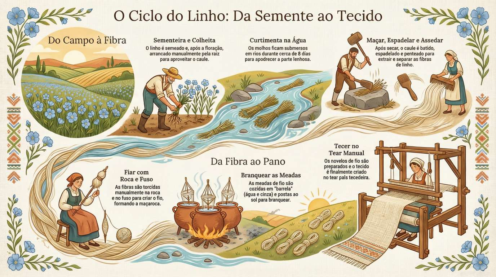
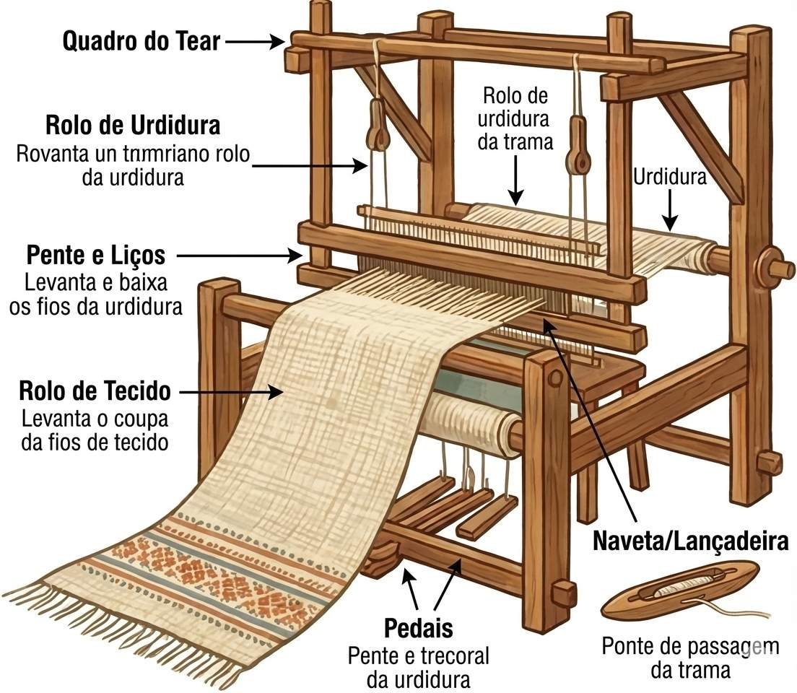

A Viagem Mágica do Linho
Património Tecido pela História de Portugal
Biblioteca Digital do Linho

Experiência Imersiva
🎬 O Vídeo do Ciclo
🎙️ Podcast: Estórias de Outrora
🖼️ Slides de Formação (1 a 14)
1 / 14
Clique na imagem para ampliar.
O Laboratório do Artesão

Infografia: Da Fibra ao Pano
Sementeira
Maçar
Branquear
Fiar
Tear
Tear Real
Cartas de Sabedoria
Questão 1 de 20
Acertos: 0
...
Arena de Desafios
🧩 Desafio de Termos
🛠️ Ferramentas Ancestrais
Retirar a baganha.
Assedar a fibra.
Partir a casca.
Cruzar os fios.
⏳ O Ciclo em Ordem
Relatório de Mestria
0%